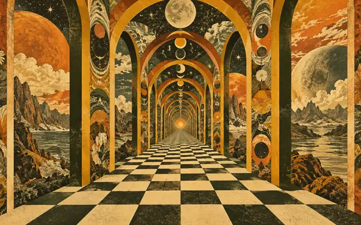
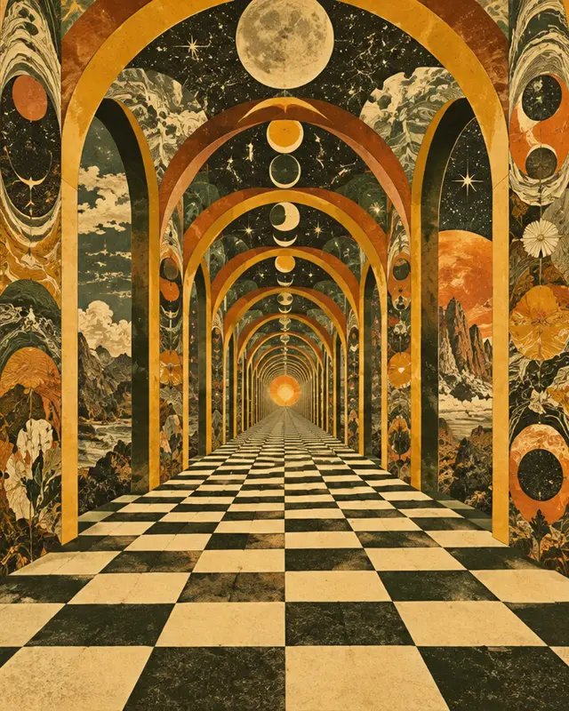
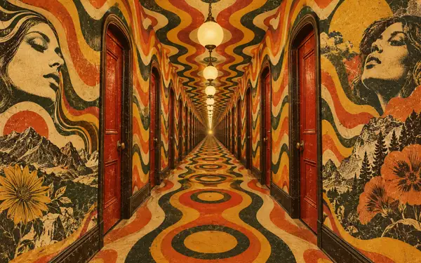

You just finished listening
Two Weeks Notice
This short block represents the end of the existing album section.
A brief detour
The Passage
Follow the light. The music stays close.
Back in the room
Contact follows here.
The prototype ends without automatic navigation. This block represents the existing Contact section.
Get in touchPrototype notes
Actual crop comparison
These frames use the web derivatives at representative aspect ratios. The motel corridor remains an alternate rather than a third beat.


